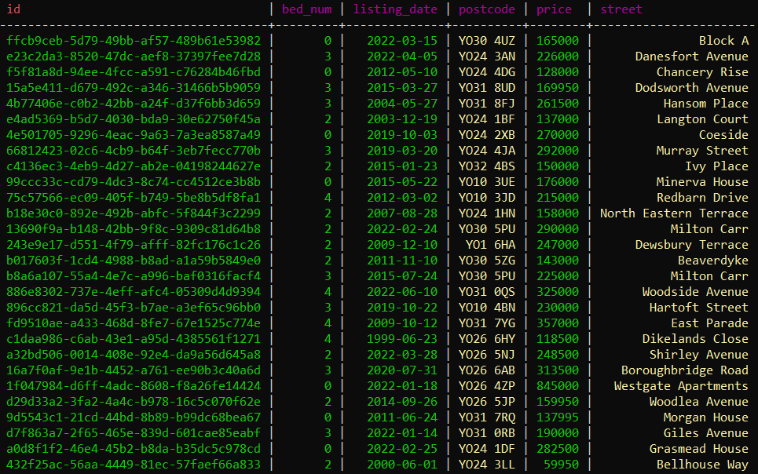

Webscraping Housing Project
Objectives:
- Scrape the website to obtain house details, such as price, postcode, street name etc
- Learn how to set up Apache Cassandra in a docker container
- Create a pipeline in python to store scraped data in Apache Cassandra
Apache Cassandra:
Apache Cassandra is a distributed NoSQL database system designed for high scalability and availability with no single point of failure. It is based on a decentralized architecture that allows it to handle large amounts of data across multiple servers while ensuring performance and fault-tolerance. Cassandra uses a key-value data model, where data is stored and retrieved based on a unique key, and supports flexible data models, including column-family, document-oriented, and graph-oriented. It is widely used in enterprise applications, such as real-time analytics, social networking, and e-commerce, where high availability and scalability are critical.
Architecture:
- Data is distributed with positive performance consequences
- Each node has a set of tokens
- The data is partitioned based on the ranges of these tokens
- The partition key is responsible for the distribution of the data
- A partition key can be the id or multiple columns such as the first and last name columns combined
- A hashing function is used to determine which node the data is stored at
Key Terms:
- Coordinator node - A node designated to be in charge of partitioning the data
- Replica node - A node that contains the tokens from another node as a copy
- Replication factor - how many nodes the data has been replicated to
- Token - A hashed partition key
The result of this project can be seen in the image above.